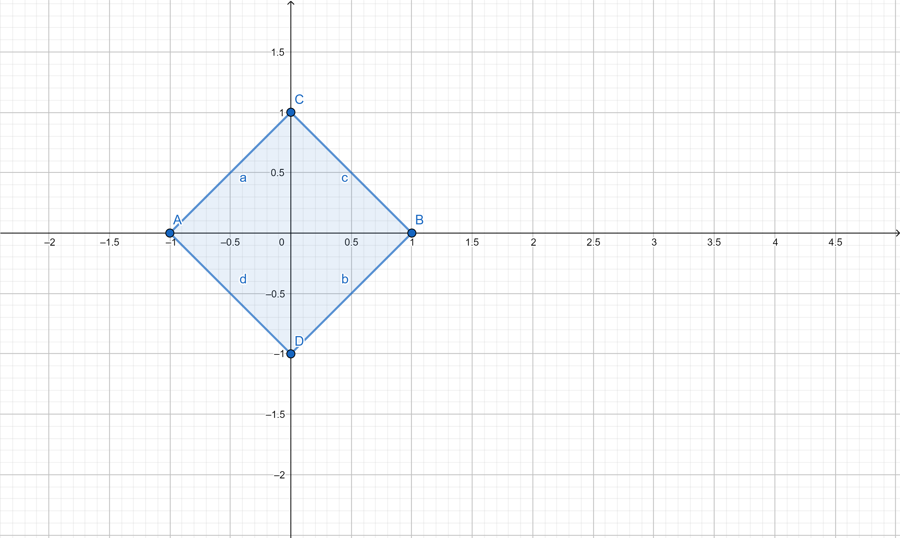

MATHEMATICS, MADE EXPLORABLE
Mundo dos Números
Mundo dos Números is an educational project devoted to sharing mathematics, especially ideas from undergraduate and advanced mathematics.
The goal is to present sophisticated concepts in a clear and approachable way, so that more people can discover the beauty of the Queen of the Sciences.
01 / ABSTRACT ALGEBRA
Group theory
A group is a set \(G\) equipped with a binary operation \(\circ:G\times G\to G\) satisfying:
- Associativity. For all \(g,h,k\in G\), \(g\circ(h\circ k)=(g\circ h)\circ k\).
- Identity. There exists \(e\in G\) such that \(g\circ e=e\circ g=g\) for every \(g\in G\).
- Inverses. For every \(g\in G\), there exists \(g^{-1}\in G\) such that \(g\circ g^{-1}=g^{-1}\circ g=e\).
If, in addition, \(g\circ h=h\circ g\) for all \(g,h\in G\), the group is called abelian (or commutative).
A familiar example
The real numbers under addition, \((\mathbb{R},+)\), form an abelian group. It is infinite, so its cardinality is \(|\mathbb{R}|=\infty\).
Another example is the set of nonzero complex numbers under multiplication, \((\mathbb{C}^{\times},\cdot)\).
Roots of unity
Let \(n\in\mathbb{N}\), with \(n\geq1\). An n-th root of unity is a complex number \(z\in\mathbb{C}\) such that \(z^n=1\). The set of all n-th roots of unity forms a finite group under complex multiplication.
These numbers have a beautiful explicit description:
Thus, the group is
Geometrically, the roots lie at the vertices of a regular polygon on the unit circle. For \(n=4\), they form a square:

02 / TOPOLOGY
Topological spaces
A topological space is a set equipped with an additional structure called a topology. Roughly speaking, this structure provides a framework for defining continuity and studying convergence and limits. For example, one may consider expressions such as
To make this idea precise, we begin with the definition.
A topology on a set \(X\) is a collection \(\tau\) of subsets of \(X\), called open sets, satisfying:
- Empty set and whole space. \(\emptyset\in\tau\) and \(X\in\tau\).
- Arbitrary unions. If \(\{U_\lambda\}_{\lambda\in\Lambda}\) is a family in \(\tau\), then \(\displaystyle\bigcup_{\lambda\in\Lambda}U_\lambda\in\tau\).
- Finite intersections. If \(U_1,\ldots,U_m\in\tau\), then \(\displaystyle\bigcap_{j=1}^{m}U_j\in\tau\).
The elements of \(\tau\) are called open subsets of \(X\). A topological space is a pair \((X,\tau)\) consisting of a set and a topology on it.
A fundamental example: the real line
The usual topology on \(\mathbb{R}\) is generated by open intervals. An open interval has the form
For instance, \((0,1)\) is the set of all real numbers strictly between zero and one. These intervals provide the basic open neighborhoods used in the usual topology of the real line.